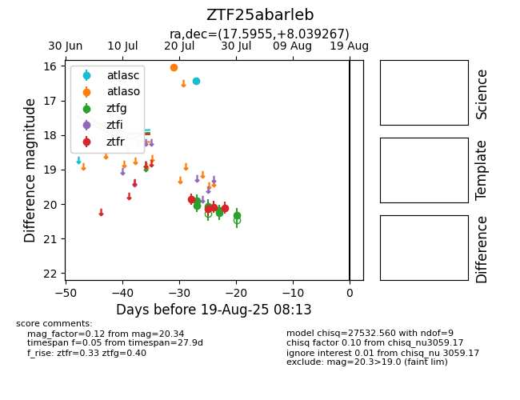

Target ZTF25abarleb at 2025-08-19 09:59, see:
FINK: fink-portal.org/ZTF25abarleb
Lasair: lasair-ztf.lsst.ac.uk/objects/ZTF25abarleb
ALeRCE: alerce.online/object/ZTF25abarleb
alt names
ZTF25abarleb (ztf,fink)
coordinates:
equatorial (ra, dec) = (17.5955,+8.03927)
galactic (l, b) = (131.0320,-54.53427)
photometry
last atlasc=16.44, atlaso=16.03, ztfg=20.34, ztfr=20.11
1 atlasc, 1 atlaso, 6 ztfg, 4 ztfr detections
